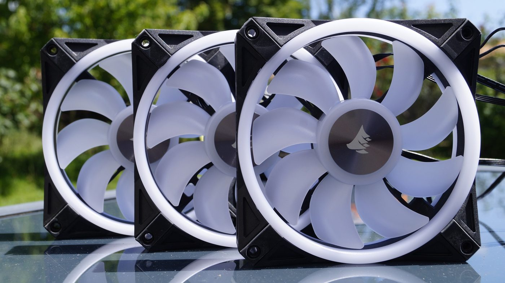
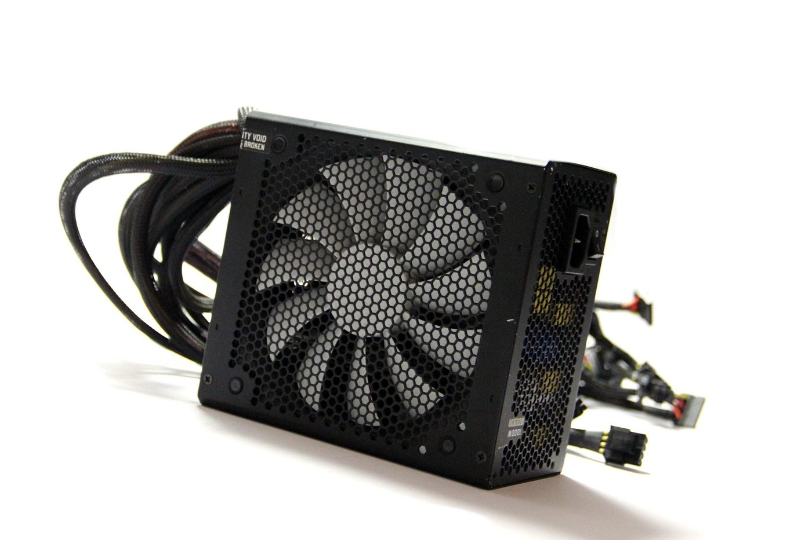
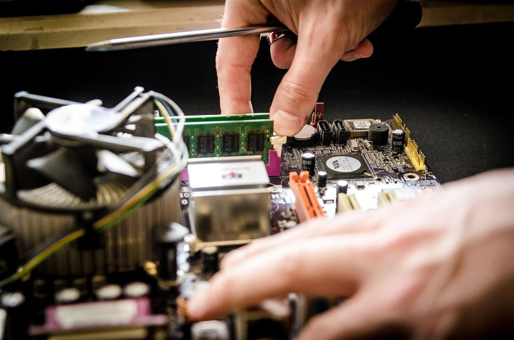
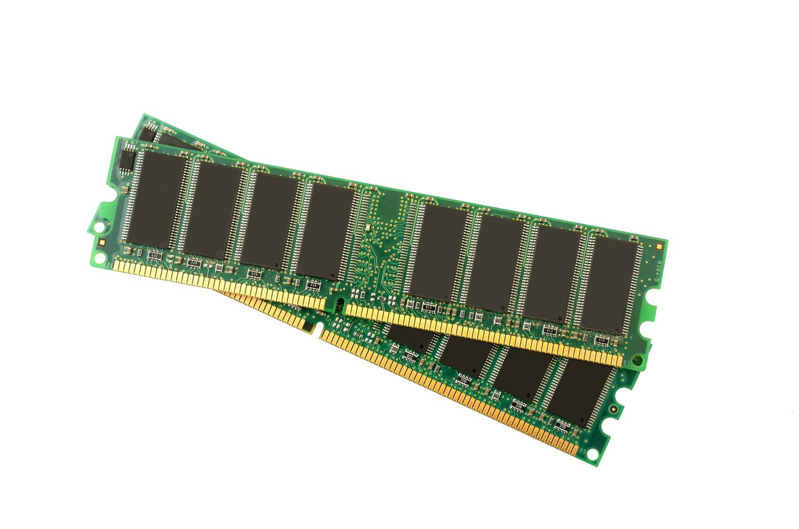

Mantenimiento de tu PC de escritorio
Al ser modular, permite limpieza profunda y cambios de componentes con facilidad.
Componentes a revisar
Qué atender en cada pieza.

Ventiladores
Limpia aspas y filtros; reemplaza si hacen ruido o giran lento.

Fuente de poder
Verifica cables y que no esté sobrecalentada; cambia cada 5–7 años.

Procesador y pasta térmica
Renueva la pasta cada 1–2 años para mantener buenas temperaturas.

Almacenamiento y RAM
Reasienta módulos, revisa estado SMART del disco y limpia contactos.
Limpieza interna paso a paso
- Apaga y desconecta todoMantén presionado el botón de encendido para descargar la energía residual.
- Abre el gabineteTrabaja en un lugar ventilado y usa pulsera antiestática si es posible.
- Retira el polvoAire comprimido sujetando las aspas para que no giren en exceso.
- Ordena el cableadoMejora el flujo de aire y facilita futuros mantenimientos.
- Cierra y pruebaEnciende y comprueba temperaturas y ruido.
Flujo de aire en el gabinete
Un buen flujo reduce la temperatura y el ruido.
El aire debe entrar frío por el frente y salir caliente por la parte trasera y superior. Evita colocar el gabinete pegado a la pared o dentro de un mueble cerrado. Un cableado ordenado y filtros de polvo limpios mejoran la circulación y facilitan el mantenimiento.
Pasta térmica
El puente entre el procesador y el disipador.
La pasta térmica llena las imperfecciones microscópicas entre el procesador y el disipador para transferir el calor. Con los años se reseca y pierde eficacia, provocando temperaturas altas. Retira la antigua con alcohol isopropílico, aplica una cantidad del tamaño de un grano de arroz y vuelve a montar el disipador con presión uniforme.
Protección eléctrica
Evita daños por variaciones de voltaje.
- Conecta el equipo a un regulador o, mejor aún, a un UPS que dé respaldo ante cortes.
- No sobrecargues regletas con muchos aparatos de alto consumo.
- Verifica que la toma tenga conexión a tierra.
Herramientas necesarias
Herramientas recomendadas para el mantenimiento de una PC de escritorio.

Galería visual
Referencias gráficas del proceso.

